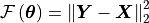
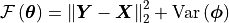
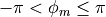
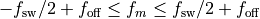
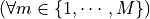
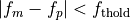
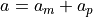
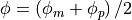
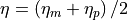

nmrespy.nlp.nlp¶
Nonlinear programming for generating NMR parameter estiamtes
- class nmrespy.nlp.nlp.NonlinearProgramming(data, theta0, sw, sfo=None, offset=None, start_point=0, phase_variance=True, method='trust_region', bound=False, max_iterations=None, amp_thold=None, freq_thold=None, negative_amps='remove', fprint=True, mode='apfd')[source]¶
Class for nonlinear programming for determination of spectral parameter estimates.
- Parameters
data (numpy.ndarray) – Signal to be considered (unnormalised).
theta0 (numpy.ndarray) –
Initial parameter guess in the following form:
1-dimensional data:
theta0 = numpy.array([ [a_1, φ_1, f_1, η_1], [a_2, φ_2, f_2, η_2], ..., [a_m, φ_m, f_m, η_m], ])
2-dimensional data:
theta0 = numpy.array([ [a_1, φ_1, f1_1, f2_1, η1_1, η2_1], [a_2, φ_2, f1_2, f2_2, η1_2, η2_2], ..., [a_m, φ_m, f1_m, f2_m, η1_m, η2_m], ])
sw ([float] or [float, float]) – The experiment sweep width in each dimension in Hz.
offset ([float] or [float, float] or None, default: None) – The experiment transmitter offset frequency in Hz. If None, offset will be set as
data.ndim * [0.0].sfo ([float], [float, float] or None, default: None) – The experiment transmitter frequency in each dimension in MHz. This is not necessary, however if it set it to None, no conversion of frequencies from Hz to ppm will be possible!
start_point (int, default: 0) – The first timepoint sampled, in units of

phase_variance (bool, default: True) –
Specifies whether or not to include the variance of oscillator phases into the NLP routine. The fiedlity (cost function) is given by:
phase_variance set to False:

phase_variance set to True:

method ('trust_region' or 'lbfgs', default: 'trust_region') – Optimisation algorithm to use. These utilise scipy.optimise.minimise, with the method either being trust-constr, or L-BFGS-B.
bound (bool, default: False) –
Specifies whether or not to bound the parameters during optimisation. Bounds are given by:





max_iterations (int or None, default: None) – A value specifiying the number of iterations the routine may run through before it is terminated. If None, the default number of maximum iterations is set (100 if method is ‘trust_region’, and 500 if method is ‘lbfgs’).
amp_thold (float or None, default: None) – A value that imposes a threshold for deleting oscillators of negligible ampltiude. If None, does nothing. If a float, oscillators with amplitudes satisfying
 will be removed from the
parameter array, where
will be removed from the
parameter array, where  is the Euclidian norm of the vector of all the oscillator amplitudes.
It is advised to set amp_thold at least a couple of orders of
magnitude below 1.
is the Euclidian norm of the vector of all the oscillator amplitudes.
It is advised to set amp_thold at least a couple of orders of
magnitude below 1.freq_thold (float or None) –
If None, does nothing. If a float, oscillator pairs with frequencies satisfying  will be removed from the parameter array. A new oscillator will be included in the array, with parameters:
amplitude: 
phase: 
frequency:

damping: 
Warning
NOT IMPLEMENTED YET
negative_amps ('remove' or 'flip_phase', default: 'remove') –
Indicates how to treat oscillators which have gained negative amplitudes during the optimisation.
’remove’ will result in such oscillators being purged from the parameter estimate. The optimisation routine will the be re-run recursively until no oscillators have a negative amplitude.
’flip_phase’ will retain oscillators with negative amplitudes, but the the amplitudes will be multiplied by -1, and a π radians phase shift will be applied to these oscillators.
fprint (bool, default: True) – If True, the method provides information on progress to the terminal as it runs. If False, the method will run silently.
Notes
The two optimisation algorithms (specified by method) primarily differ in how they treat the calculation of the matrix of cost function second derivatives (called the Hessian). ‘trust_region’ will calculate the Hessian explicitly at every iteration, whilst ‘lbfgs’ uses an update formula based on gradient information to estimate the Hessian. The upshot of this is that the convergence rate (the number of iterations needed to reach convergence) is typically better for ‘trust_region’, though each iteration typically takes longer to generate. By default, it is advised to use ‘trust_region’, however if your guess has a large number of signals, you may find ‘lbfgs’ performs more effectively.
- __init__(data, theta0, sw, sfo=None, offset=None, start_point=0, phase_variance=True, method='trust_region', bound=False, max_iterations=None, amp_thold=None, freq_thold=None, negative_amps='remove', fprint=True, mode='apfd')[source]¶
Initialise the class instance. Checks that all arguments are valid
- _check_negative_amps()[source]¶
Determines which oscillators (if any) have negative amplitudes, and removes them, or recasts them with positive amplitude and a 180° phase shift.
- Returns
term – Used by
_optimise()to decide whether to terminate or re-run the optimisation routine.- Return type
bool
- _get_active_passive_indices()[source]¶
Determine the indices of blocks of the parameter vector that contain the active and passive parameters
- _get_bounds()[source]¶
Constructs a list of bounding constraints to set for each parameter. The bounds are as follows:
amplitudes: 0 < a < ∞
phases: -π < φ < π
frequencies: offset - sw/2 < f < offset + sw/2
damping: 0 < η < ∞
- _get_slice(idx, osc_idx=None)[source]¶
- Parameters
idx (list) – Parameter types to be targeted. Valid ints are 0 to 3 (included) for a 1D signal, and 0 to 5 for a 2D signal
osc_idx (list or None default: None) – Oscillators to be targeted. Can be either None, where all oscillators are indexed, or a list of ints, in order to select a subset of oscillators. Valid ints are 0 to self.m - 1 (included).
- Returns
slice – Array slice.
- Return type
numpy.ndarray
- _merge_active_passive()[source]¶
Given the active and passive parameters in vector form, merge to form the complete parameter vector
- Parameters
active_vec (numpy.ndarray) – Active vector.
passive_vec (numpy,ndarray) – Passive vector.
- Returns
merged_vec – Merged (complete) vector.
- Return type
numpy.ndarray
- static _pi_flip(arr)[source]¶
flip array of phases by π raidnas, ensuring the phases remain in the range (-π, π]
- _shift_offset(params, direction)[source]¶
Shifts frequencies to centre to or displace from 0
- Parameters
params (numpy.ndarray) – Full parameter array
direction ('center' or 'displace') – ‘center’ shifts frerquencies such that the central frequency is set to zero. ‘displace’ moves frequencies away from zero, to be reflected by offset.
- _split_active_passive(merged_vec)[source]¶
Given a full vector of parameters, split to form vectors of active and passive parameters.
- Parameters
merged_vec (numpy.ndarray) – Full parameter vector
- Returns
active_vec (numpy.ndarray) – Active vector.
passive_vec (numpy,ndarray) – Passive vector.